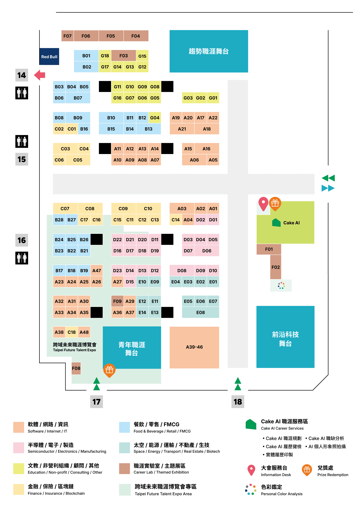

交流優先順序，不是入職評分。職缺、薪資及評論沿用 9/9 查核資料，展區圖於 9/11 重核；待遇與名額以 HR 最新確認為準。
公司清單
展區與走訪順序
先集中同一展區，避免依排名跨區來回。時間不夠先談前六家；下列是分區建議，不是現場最短路徑。
D 區 · 製造與自動化
D01 南亞 → D02 和碩 → D07 尖點 → D18 鴻海；再補 D05 祥茂、D19 群聯、D23 新代。
A 區 · 軟體與 AI
A05 台灣大哥大 → A18 和泰 → A10 鈦坦。
C 區 · 技術導入與 PM
C01 KPMG → C13 永豐。
官方展區圖

圖源：Cake 官方，9/11 下載；實際配置以現場為準。
展區另列的 8 個項目
攤位談話準備
30 秒 · 自動化／系統整合
您好，我是資工學士、通訊碩士，今年剛畢業。研究中使用 Python、PostgreSQL、API 和 QGIS 建立資料處理與品質檢核系統。我想找自動化、測試開發或製造資訊系統的新人職缺，想請問你們有哪一組比較適合這樣的背景？新人進去第一個專案通常做什麼？
30 秒 · AI 應用／技術導入
您好，我是資工學士、通訊碩士，研究主要做 Python 資料處理、資料庫與 API 整合，也做過公開文件問答的 RAG 原型。我平常會用 AI 工具協助理解程式、除錯與整理文件，但會再驗證結果。想了解你們是否有 AI 應用、流程自動化或技術導入的新人職缺，以及團隊怎麼帶新人。
每間至少確認四件事
- 實際工作：新人前三個月做什麼？開發、維修、文件、支援各占多少？
- 帶領方式：有誰帶？程式由誰 review？多久能開始負責小任務？
- 待遇：固定月薪與書面保證月份多少？績效、分紅、加班費分開算。
- 生活界線：實際廠址、輪班、假日待命、出差與派駐安排？
薪資怎麼問、怎麼比
「想請問這個職缺新鮮人核薪區間，以及固定月薪、保證年終和績效獎金分別怎麼計算？」
固定月薪 56,000 × 12 = 672,000 元；48,000 × 14 也等於 672,000 元，但後者必須確認兩個月是書面保證及首年是否按比例。兩者每月可支配金額不同，不能只看年薪相同。
加班費、輪班津貼、歷年平均分紅與股權，不當作保證待遇。這是比較範例，不是公司核薪承諾。
若現場突然問技術
- Python：能解釋 list/dict、函式、例外處理；不會的語法可先用步驟說明。
- SQL：說清 JOIN 的對應關係、一對多重複與 NULL。
- API 遺漏資料：先確認 HTTP 狀態與回傳結構，區分欄位缺失、空值與逾時，再決定驗證、記錄或有限次重試，不先任意加延遲。
- 作品貢獻：講一個實際問題、自己怎麼查、如何驗證修改；AI 協助與尚未熟練的部分如實說明。
出發清單 建議準備，非主辦強制文件
查核範圍與風險
沿用 9/9 整理：152 項企業與資源、139 個公司清單、3,807 筆職缺，深讀 95 份重點 JD。17 個清單回傳零筆，不代表沒有招募。
尚未逐間完成財報、勞動違規、法院及論壇完整盡調。以下歷史紀錄與匿名心得僅作提問線索，不能推定目前團隊一定有同樣問題。